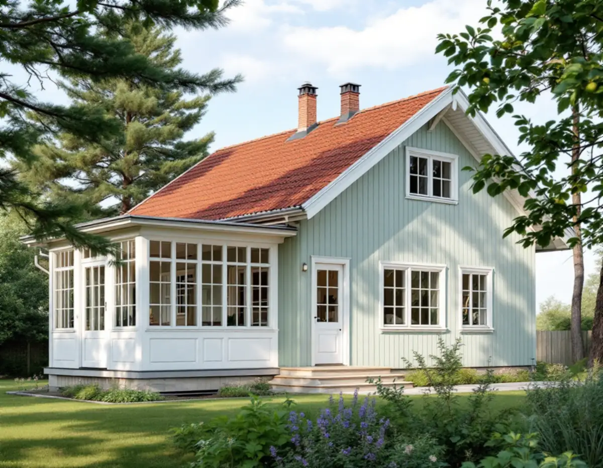
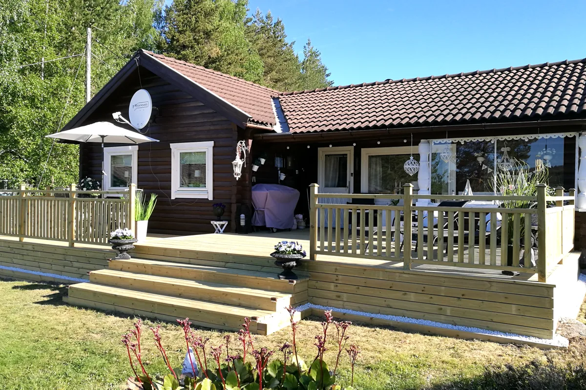

Klassning och plan
Vi slår upp Stadsmuseets karta och detaljplanen i stadens e-tjänst innan något ritas, så att du vet om arbetet kräver lov.

I Bromma är det mesta som ger villan dess karaktär gjort av trä: glasverandan, entrédörren, räckena och fönstrens bågar och spröjs.
Beskriv jobbet kort.
Något blev fel. Kontrollera uppgifterna eller ring 08 12 410 276.
Vi tittar på jobbet på plats innan du får offert.
Du ser vad som ingår och vad det kostar.
Vi drar av ROT direkt och sköter ansökan.
Geal Entreprenad AB, Bromma. Org.nr 559303-7566.

Vi lagar och bygger nytt – verandor, entréer, altaner och tillbyggnader mot trädgården – och tar först reda på vad Stadsmuseets klassificering och Stockholms stads lovregler säger om just din fastighet.
Stadens strategi Varsam utveckling av småhus- och villaområden skiljer mellan villastäderna och trädgårdsstäderna. Villastäderna, som den kring Bromma kyrka, växte fram efter privata initiativ och fick en brokigare bebyggelse med individuellt utformade hus. Trä var det vanligaste fasadmaterialet, och det var glasverandor, takkupor och snickarglädje som gav stadsdelarna den variation som syns än i dag.
Trädgårdsstäderna i Äppelviken, Ålsten och Smedslätten tillkom på 1920-talet, och många av husen där ritades av arkitekten Edvin Engström. I Äppelviken blev det nationalromantiska draget tydligt, med branta tak och småspröjsade fönster. I Smedslätten, Nockeby och Höglandet är husen enklare och symmetriska. I Smedslätten är det små detaljer som takkupor och hörnpilastrar som ger varje hus en egen identitet.
Strategin räknar ursprungliga byggnadsdetaljer som fönster, entrédörrar och räcken till det som bär trädgårdsstadens värden. För oss betyder det att en entré eller ett räcke i första hand lagas eller kopieras, och att en ny del får samma profil som den gamla i stället för att bytas mot en standardvara.
En glasveranda från villastadens första årtionden har ofta byggts om flera gånger. Vi tar bort det som är ruttet, mäter upp bågar, spröjs, foder och räcken och tillverkar nya delar efter de bevarade.
Stockholms stad räknar mycket som en ändring av fönster och dörrar: att ändra dimensioner, proportioner eller profilering på karmar, bågar och spröjs, att byta upphängning och att ändra indelningen, till exempel lägga till spröjs eller ta bort en mittpost. Om det kräver bygglov beror på byggnaden och fasaden.
Har en veranda eller entré försvunnit kan stadens äldre miljöprogram och typritningssamlingar visa hur husen såg ut. De har ingen juridisk status vid bygglov men ger kunskap om områdets karaktär. Ska verandan också målas om samordnar vi arbetet med målare i Bromma, så att nytt trä grundas innan vintern.
Enligt stadens sida om mur, plank och altan krävs bygglov för en altan som blir högre än 1,8 meter över marken inom 3,6 meter från en byggnad, eller högre än 1,2 meter längre bort. Ett plank som byggs ovanpå altanen räknas in i höjden, liksom en mur under den. Ett lovbefriat staket eller räcke på altanen räknas däremot inte.
Får altanen tak eller väggar kan den bli en tillbyggnad, och staden skriver att det kan gälla även om bara undersidan byggs in. Altaner som inte kräver bygglov får avvika från detaljplanen så länge den totala ytan inte överstiger 50 kvadratmeter. Ändras markens höjd mer än en halv meter inom detaljplan behövs marklov.
Var altanen hamnar spelar också roll. Strategin för trädgårdsstäderna säger att tillbyggnader, takkupor och terrasser i första hand ska göras mot trädgårdssidan och att utblicken från gatan in i kvarteret ska hållas öppen.
Staden ger uterum, skärmtak, större takkupor och lågt sittande balkonger som exempel på tillbyggnader. En sådan behöver inte bygglov om den inte är större än 30 kvadratmeter och inte högre än husets taknock, men i de 30 kvadratmetrarna ingår allt som redan byggts till lovfritt, till exempel skärmtak, attefallstillbyggnader och attefallskupor. Mer om planeringen finns på sidan om tillbyggnad.
På ett en- eller tvåbostadshus får den lovfria tillbyggnaden strida mot detaljplanen och till exempel placeras på prickmark. Den ska ligga minst 4,5 meter från tomtgränsen om inte grannen skriftligen medger annat; mot gata eller park är det oftast staden som ska ge medgivandet. Påverkas bärande delar eller brandskydd krävs anmälan och startbesked.
Ligger fastigheten i ett område eller är huset klassat som särskilt kulturhistoriskt värdefullt gäller utökad lovplikt. Stadsmuseet beskriver sin klassificering som ett kunskapsunderlag som används vid bygglovsprövning. Kartan ger en första indikation, men alla byggnader är ännu inte inventerade.
Vi slår upp Stadsmuseets karta och detaljplanen i stadens e-tjänst innan något ritas, så att du vet om arbetet kräver lov.
Vi mäter upp verandan, entrén eller altanläget och noterar röta, sättningar och äldre lagningar.
Saknade detaljer ritas av från bevarade delar eller gamla foton och tas fram i samma profil.
Du får en beskrivning av arbetet, i vilken ordning det görs och vad som eventuellt ska sökas eller anmälas.
Vi arbetar etappvis och samordnar med målare och plåtslagare så att nytt trä skyddas i tid.
När allt är klart går vi igenom resultatet och lämnar en sammanställning av det som gjorts.
Enligt Skatteverket ger det rotavdrag att bygga eller reparera en altan eller balkong som sitter ihop med huset, att glasa in en altan och att reparera eller byta dörrar och fönster. En ny fristående byggnad eller en ny friggebod ger inget avdrag, och inte heller ett staket.
Avdraget är 30 procent av arbetskostnaden, högst 50 000 kr per person och år, och rot och rut får tillsammans uppgå till högst 75 000 kr. Material, resor och maskiner betalar du fullt ut. För om- och tillbyggnad ska huset vara äldre än fem år räknat från värdeåret, medan reparation och underhåll ger avdrag oavsett ålder. Vi drar av beloppet direkt på fakturan.
Mest väger hur mycket av verandan eller entrén som går att spara, om bågar och profiler måste specialtillverkas och om arbetet kräver lov eller anmälan. En altan på en plan gräsmatta är ett annat jobb än en veranda på en villa där grunden har satt sig. Vi kommer ut kostnadsfritt, tittar på huset och lämnar sedan ett skriftligt kostnadsförslag.
Altan, väggar, dörrar och inredning.
Snickare i Stockholm →Takbyte, takbesiktning och plåtarbeten.
Takläggare i Bromma →Trädgårdsstäder, tegel och funkistak.
Takrenovering i Bromma →Fasader i trädgårdsstäderna.
Målare i Bromma →Kök i villa och bostadsrätt.
Köksrenovering i Bromma →Badrum i trävillor och småstugor.
Badrumsrenovering i Bromma →Nya golv och slipning.
Golvläggare i Bromma →Panel, puts och isolering.
Fasadrenovering i Bromma →Trädgårdsstad, karta och 30 m² inom plan.
Attefallshus i Bromma →Vind, bärande väggar och en andra bostad.
Byggföretag i Bromma →Kulörval och färgtyp i trädgårdsstaden.
Fasadmålning i Bromma →Småspröjs, småstugor och funkis i Bromma.
Fönsterbyte i Bromma →Småstugornas fönster, kitt och linoljefärg.
Fönsterrenovering i Bromma →Slipa furugolvet och behandla med lut och såpa.
Golvslipning i Bromma →Kupor, låga tak och bleck i Bromma.
Plåtslagare i Bromma →Lertegel, småstugor och solceller i Bromma.
Takbyte i Bromma →Spara och ersätta gamla tapeter.
Tapetsering i Bromma →Småstugor, trädgårdsstad och prickmark.
Tillbyggnad i Bromma →Hela villan i rätt ordning.
Totalrenovering i Bromma →Eller ring 08 12 410 276, mån–fre 08–17.
Beskriv jobbet kort.
Något blev fel. Kontrollera uppgifterna eller ring 08 12 410 276.